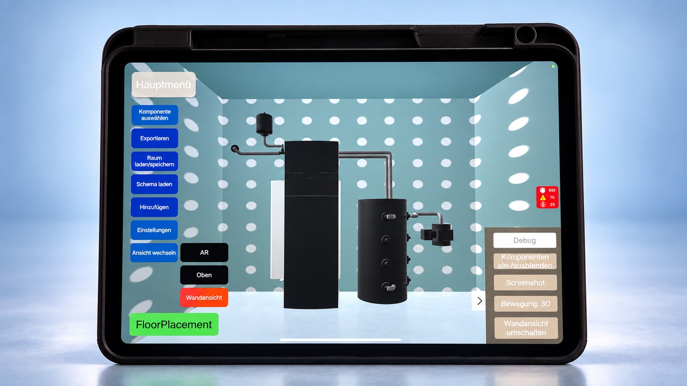

Heat Pump PlanAR | Fraunhofer ISE
My role · Scientific Assistant, Spatial Computing & Simulation

Overview
On a first site visit, a heating installer needs to work out where the equipment will fit, how the pipes will run, and what the job will take. Heat Pump PlanAR brings those steps into an iPad app. My work at Fraunhofer ISE covered spatial planning, Python backend integration, and DevOps for iOS releases.
The installer scans the room and selects a heating system configuration. The app places the main components and proposes a pipe route. The installer can inspect the layout in augmented reality, move equipment, and compare options on site. The team can revise the plan later and export a materials list and estimated installation time to help prepare a quote.
Spatial planning in Unity
I designed the modular digital twin workflow in Unity and C#, connecting the scanned room, heating components, and pipework. I used the surfaces captured by the iPad’s LiDAR sensor as obstacles during equipment placement and pipe routing.
I built controls that let installers pin components to walls, set their height, and rotate them in 90-degree increments. I also added top and wall views so users could follow a pipe run from above or check the height of a wall-mounted component.
Restoring saved layouts
When an installer returns to a room, the components in a saved plan need to reappear where they were originally placed. I used ARKit spatial anchors and versioned world maps to tie the layout to the physical room. Once the iPad recognized the room again, the app restored the saved components to their previous positions. I also built session recovery logic and improved saved-room browsing to reduce load times.
Python backend and engineering integration
I built custom Unity editor tools and a Python API that connected the iPad app to its backend. I also developed a workflow to import, label, and export 3D models in GLB format for handoff to building information modeling (BIM) tools.
I ran Unity in headless mode to extract room measurements and publish them as structured data. This gave external planning tools access to measurements from the same room scan.
DevOps and iOS release management
I managed iOS provisioning, validated builds on target devices, and handled build uploads and user accounts in App Store Connect. I distributed builds through TestFlight and mobile device management (MDM). I used dedicated development, bugfix, release, and deployment branches so changes could be traced through each release.
I wrote automated tests for performance and load times and ran regression tests after changes to check that existing features still worked.
Outcome
Installers could check a proposed layout against the actual room during the first visit and reopen it in place on a later visit. The exported materials list and installation estimate supported quoting, while the 3D models and room measurements could be carried into downstream engineering tools.
Technologies used
 Unity
Unity C#
C#- Python
- ARKit
- LiDAR
- GLB
- App Store Connect
- TestFlight
- Mobile device management